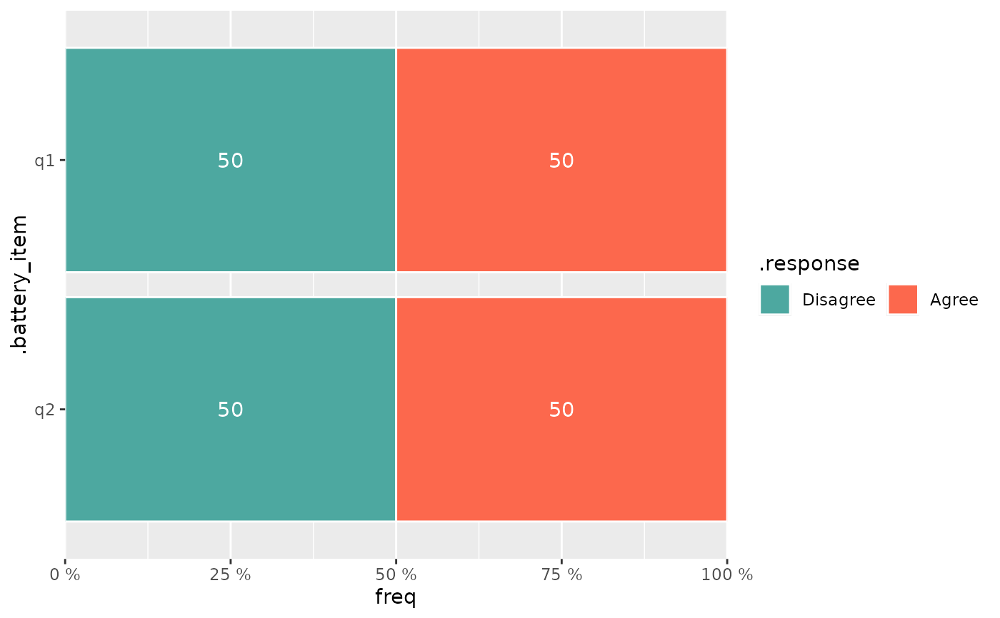

Plot a battery of same-scale items, with level validation
stem_battery_plot.RdRuntime helper behind new_stem_visualize_battery_block(): validates that the
chosen items are categorical and share identical response categories
(factor levels / character values) and then draws them with
stemtools::stem_battery() - one stacked horizontal bar per item. Splitting
the check out (rather than calling stem_battery() directly from the block's
emitted expression) lets a mismatched selection - items from different
scales that cannot sensibly share one axis - fail with an informative error
the block can show, instead of stem_battery()'s internal reshape silently
unioning the levels into a nonsense chart.
Usage
stem_battery_plot(
data,
items,
weight = NULL,
order_by = NULL,
item_label = TRUE,
palette = "div1",
direction = 1,
labels = TRUE,
label_accuracy = 1,
label_hide = 0.05,
reverse_levels = FALSE
)Arguments
- data
Data frame holding the item (and weight) columns.
- items
Character vector of column names to plot as the battery.
- weight
Optional name of a numeric survey-weight column (
NULL/""for unweighted).- order_by
Optional character vector of response categories used to order the items (see
stemtools::stem_battery()).- item_label, palette, direction, labels, label_accuracy, label_hide
Passed straight through to
stemtools::stem_battery().- reverse_levels
If
TRUE, reverse each item's response categories (factor levels) before plotting, flipping the orientation of the response scale along the bars. Defaults toFALSE.
Value
A ggplot2 object from stemtools::stem_battery().
Examples
if (requireNamespace("stemtools", quietly = TRUE)) {
df <- data.frame(
q1 = factor(c("Agree", "Disagree"), levels = c("Disagree", "Agree")),
q2 = factor(c("Disagree", "Agree"), levels = c("Disagree", "Agree"))
)
stem_battery_plot(df, items = c("q1", "q2"))
}
#> Warning: At least one item has no `label` attribute; using variable names instead.
